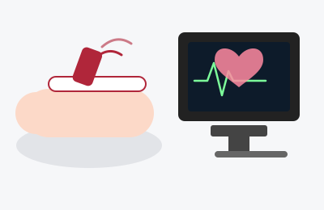

Echocardiogram
An echocardiogram (often just called an "echo") is an ultrasound of the heart. It uses sound waves — the same technology used to image a baby during pregnancy — to create a live, moving picture of your heart's chambers, valves, and muscle, with no radiation and no needles.

Duration
20–45 minutes
Fasting
Not required
Sedation
None
Recovery
None — resume normal activity immediately
What Happens During the Test
You will lie on your left side on an exam table, undressed from the waist up (a gown or drape is provided). A technician (sonographer) applies a small amount of gel to your chest and presses a handheld probe (transducer) against your skin, moving it around to capture different views of your heart. You may be asked to breathe in certain ways or briefly hold your breath. The images and sound of your heart valves and blood flow appear on a screen in real time. There is no pain, no radiation, and no needles for a standard (transthoracic) echocardiogram.
Some patients need a more detailed test called a transesophageal echocardiogram (TEE), in which a small probe is passed down the throat to get closer, clearer pictures of the heart, particularly the valves and the back chambers. This version does involve sedation and a short fasting period beforehand — your doctor will tell you if you need this version instead of the standard one.
What the Patient Should Know
- Wear a shirt that is easy to remove or unbutton.
- No preparation is needed for a standard echocardiogram — eat, drink, and take your medications as usual.
- The gel can feel cool and may leave a residue that wipes off easily afterward.
- It is completely painless; some mild pressure from the probe is normal.
- You can usually see parts of your own heart beating on the screen during the test.
- Results are reviewed by your cardiologist and typically discussed at a follow-up visit or by phone.
Recovery
There is no recovery time for a standard echocardiogram. You can drive yourself, return to work, and resume all normal activity immediately afterward. If you have a TEE with sedation, you will need someone to drive you home and should rest for the remainder of the day, similar to other sedated procedures.
Why It Is Done
- Evaluate heart muscle strength (ejection fraction) and wall motion.
- Assess heart valves for narrowing (stenosis) or leaking (regurgitation).
- Look for fluid around the heart, blood clots, or structural abnormalities.
- Monitor a known heart condition over time or after treatment.
Reliable Sources
- NHLBI, Echocardiography
- American Heart Association, Echocardiogram
This page is for general education only and does not replace advice from your doctor. If you have questions about your own test, please contact the office.